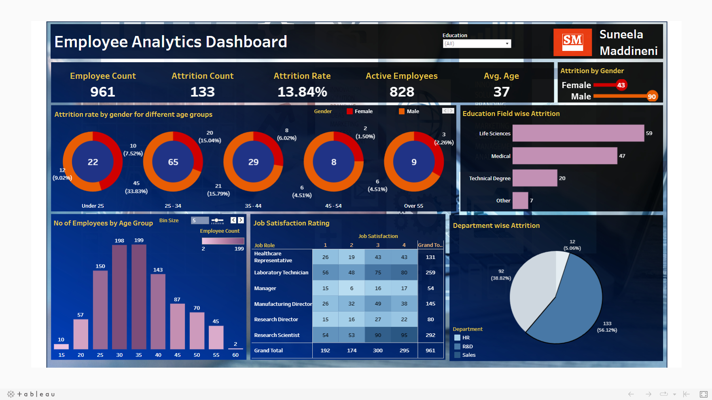

"Created an insightful Superstore Analysis Dashboard utilizing
Tableau,
showcasing comprehensive visualizations that highlight sales and profit trends,
regional performance, and product categories. Leveraged bar graphs,pie charts,
tree amps and other interactive charts to provide actionable insights for informed
decision-making. Contributed to improved businesssales by
10% over regions by offering
a clear understanding of key performance indicators
(KPIs)."
Developed a comprehensive Analysis Dashboard on Netflix shows using
Tableau,
uncovering trends in various aspects such as show duration, age ratings,
and directors. The findings revealed a noticeable rise in 'A' rated films
over the decades, accompanied by a significant increase in audience engagement,
highlighting shifting viewer preferences and content reception.
Developed a dynamic Employee Compensation Dashboard leveraging
Tableau
aimed at a comprehensive examination of employee compensation trends across years,
categorized by organization and job roles. Remarkably, the analysis unveiled a significant
decline of over 50% in compensation from 2015 to 2016.
Additionally, it shed light on the disparity where a majority of public workers lacked entitlement to health services.

Engineered a dynamic Credit Transactions Analysis Dashboard in
Tableau
delving into the expenditure patterns among Indian consumers.
Unearthed that residents of Ahmedabad exhibited the highest spending,
notably peaking during the Diwali festival. Employed line charts to
illuminate annual spending trends, coupled with strategic KPIs to monitor investments
and transactions proactively.
Customized a COVID-19 Analysis Dashboard through
Tableau,
meticulously tracing disease propagation, gauging its enduring impact, and meticulously monitoring population
dynamics and active cases across states to promptly inform unaffected individuals.
Employed informative KPIs to maintain an accurate count and disseminate crucial information.
Designed a Sales Records Dashboard for a retail establishment using
Tableau,
catering to both offline and online transactions.
Illuminated intricate seasonal and regional trends, delineated sales by country,
quantified total costs, profits, and delved into product-specific insights. Strategically integrated
KPIs to succinctly
highlight key sales metrics, profitability, costs, and revenue totals.
Crafted a Heart Disease Analysis Dashboard with
Tableau
aimed at deciphering the correlation between factors such as anemia, high blood pressure, blood sugar levels, age,
and gender in influencing the likelihood of heart attacks.
Notably, the analysis highlighted a notable vulnerability in
males around the age of
60, substantiating their higher susceptibility to heart-related incidents.

Customized a CO2 Emission Analysis Dashboard utilizing
Tableau,
aimed at quantifying CO2 emissions across diverse vehicle classes,
fuel consumption variations across units and cities, and the impact of cylinder count.
Cleverly integrated KPIs for clear representation of fuel usage,
cylinder data, and more. Notably, the analysis revealed a distinct trend where vehicles equipped with
4 cylinders demonstrated higher CO2 emissions.

Crafted an Employee Compensation Analysis Dashboard via
Tableau
yielding insights into prominent age groups for resignations,
dissecting well-compensated and underpaid roles.
Formulated strategies resulting in an 8% reduction in resignation rates,
bolstered by strategic KPIs that emphasize pivotal performance metrics.

Created a comprehensive TV shows analysis dashboard using
Power BI,
integrating data from popular streaming platforms like Hulu, Amazon Prime,
Disney Plus Hotstar, and Netflix. The dashboard showcases insights on
age groups, years, IMDb ratings, and diverse genres, providing
a comprehensive view of viewership trends and preferences.
This data-driven analysis enables informed decision-making and strategic
content planning for optimal user engagement.
Created a comprehensive Starbucks Nutrition Analysis Dashboard using
Power BI,
showcasing key metrics like carbs, fat, calories, and protein for various food items, including bakery products. The interactive visualization provides insights into nutritional content, aiding informed choices and dietary awareness.

Created a comprehensive Superstore Analysis Dashboard utilizing
Power BI
,
featuring qualitative metrics like Sales, Profits and
KPIs. Employed advanced visualization
techniques to distill complex data into actionable insights.
The dashboard provides a strategic overview, enhancing decision-making across departments.

Designed and executed a comprehensive Superstore Analysis Dashboard using
Microsoft Excel, and
leveraging qualitative metrics and key performance indicators
(KPIs)
to uncover insights into sales trends and operational efficiency.
Resulted in actionable recommendations for enhancing business strategies and
optimizing resource allocation.